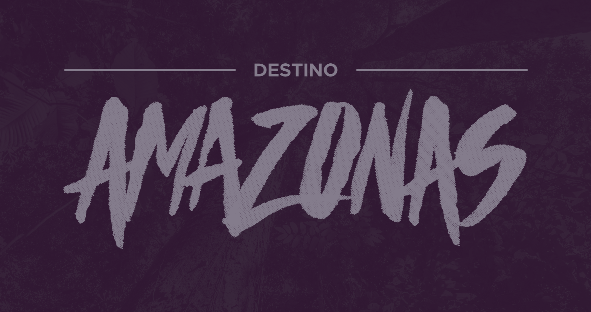
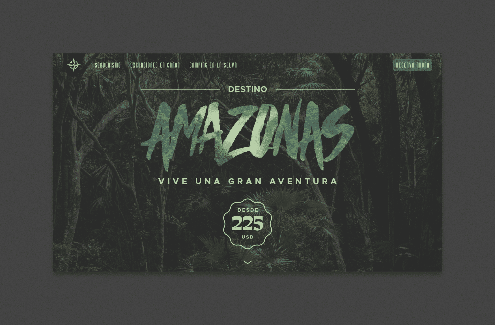
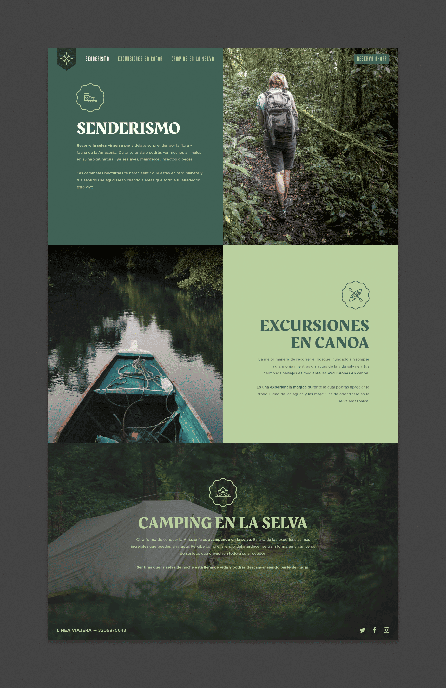
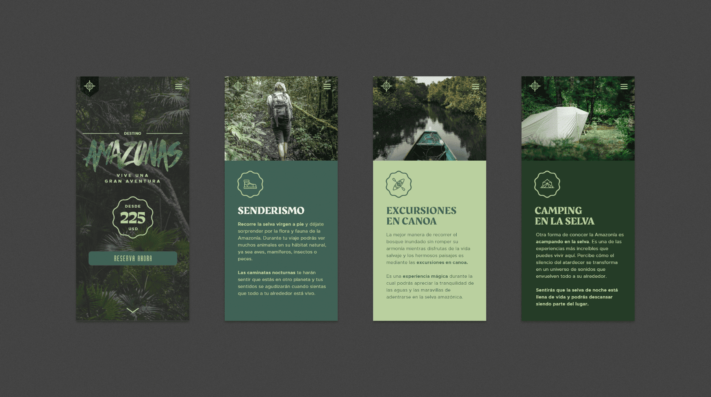

Minisitio Web (Concepto) · Diseño UI
Proyecto personal
2016/2019
La selva amazónica es el bosque tropical más extenso del mundo. Este minisitio busca promover este lugar como destino turístico, lleno de aventuras y experiencias por descubrir.
Aunque fue diseñado inicialmente en 2016, unos años después regresé a él para cambiar algunas cosas y hacerlo más interesante.

Logotipo diseñado para la página, haciendo uso de Haze, una llamativa e impactante tipografía trazada a mano.
Durante varios meses de 2016, estuve buscando trabajo. En uno de los lugares a los que apliqué me pidieron diseñar este sitio, a modo de prueba (spoiler: no me contrataron).
Aunque el resultado fue relativamente simple, siempre me gustó. En 2019, cuando volví a interesarme por el diseño de interfaces, decidí trabajar en una versión renovada del sitio, sólo por la curiosidad de ver qué podía lograr.


Imagen de arriba: versión original del sitio. Imagen de abajo: sitio rediseñado.
Sabía que iba a mantener la misma estructura, pero tenía claro que la nueva versión debía ser mucho más atractiva. Hice algunos cambios en la tipografía y en el color, y también un uso más explícito de la fotografía. En medio de ese proceso, añadí contenido adicional al sitio, para que la experiencia fuera más completa.

Además de los ajustes estilo visual del sitio, se agregaron secciones adicionales, resaltando las actividades que pueden hacerse mientras se explora la Amazonía.
Como cierre del ejercicio, adapté el nuevo diseño a un formato móvil, para tener una idea de cómo podría verse desde un celular.

El nuevo sitio de Destino Amazonas en versión móvil.